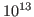

Beyond their well-known asymptotic optimality, multigrid methods are often also the most efficient methods in absolute metrics, i.e. in time to solution or energy consumption on large scale parallel supercomputers. This will be studied by extending Brandt's notion of texbook efficiency for evaluating the parallel cost efficiency of iterative methods. The HHG package, a carefully designed multigrid FE framework will be shown to reach more than ten trillion (

) unknowns for saddle point systems on current peta-scale machines. Time permitting, we will also discuss new techniques that support an algorithmic recovery from processor failures.This is joint work with B. Gmeiner, M. Huber, H. Stengel, H. Köstler, C. Waluga, M. Huber, L. John, B. Wohlmuth, M. Mohr, S. Baumann, J. Weismüller, P. Bunge.